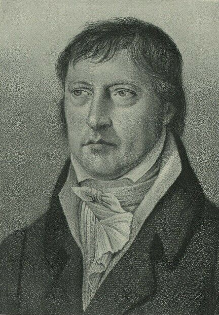
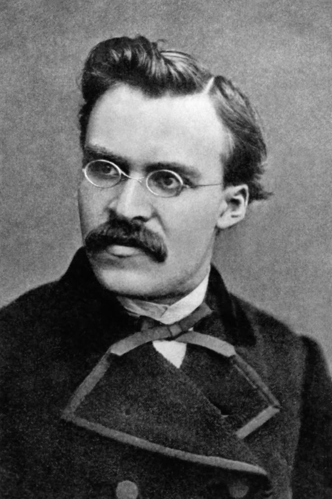
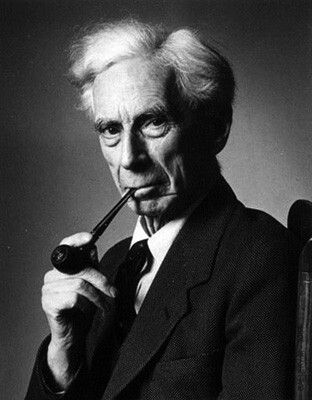
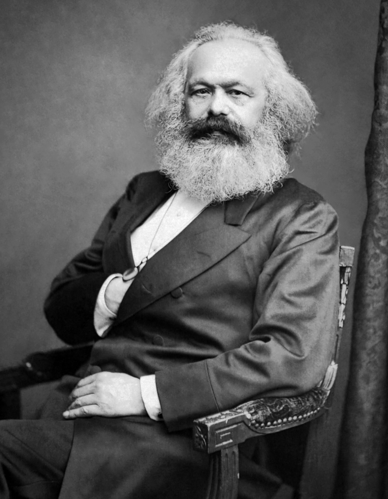
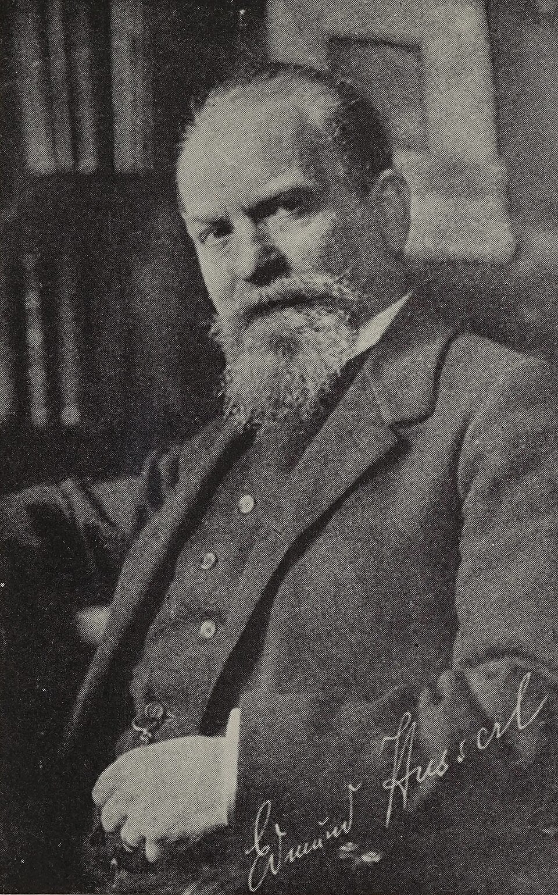
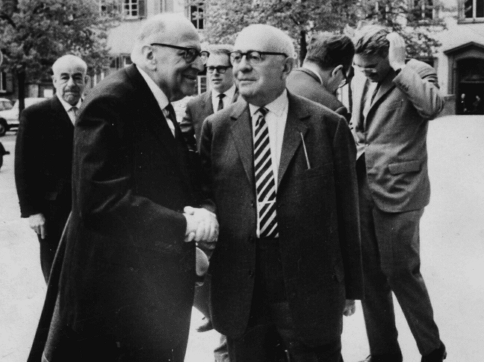
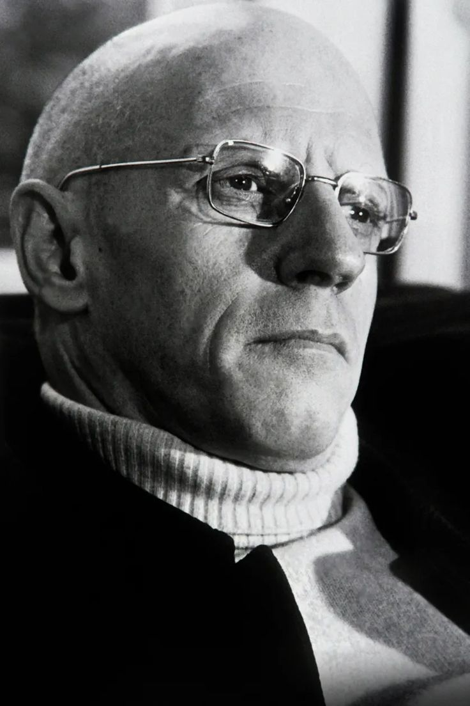
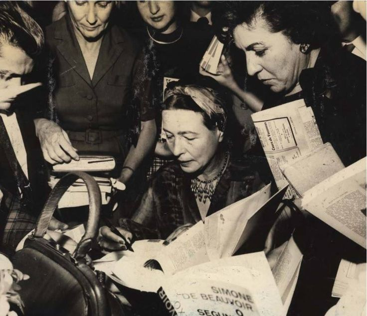

From sweeping historical systems to individual freedom to the precise analysis of language itself — the fracturing of philosophy into the many distinct traditions still active today.
Modern philosophy, in the sense used on this page, spans broadly from the early 19th century into the 20th century and begins in the intellectual world transformed by Immanuel Kant. Kant had attempted to explain how human knowledge depends both on experience and on the active structures of the mind, but his critical philosophy opened as many questions as it answered. What is the relationship between consciousness and reality? Can reason comprehend history as a whole? Is the individual primarily a rational subject, a social being, or an embodied creature thrown into a world whose meaning is uncertain? Modern philosophers pursued these questions in increasingly different directions.
Unlike earlier periods that can sometimes be organized around a relatively unified intellectual framework, the history of modern philosophy became increasingly plural. German Idealists attempted to develop comprehensive accounts of consciousness, nature, society, and history. Critics of such systems turned toward the concrete individual, emphasizing freedom, anxiety, choice, suffering, and the problem of creating meaning. At the same time, new developments in logic and mathematics encouraged another group of philosophers to make conceptual clarity and the analysis of language central to philosophical method.
This diversity eventually produced what is often described as a division between the Continental and Analytic traditions, although the historical reality is more complicated than a simple geographical separation. Existentialism, phenomenology, hermeneutics, Marxism, critical theory, and later structuralist and post-structuralist thought developed important conversations on the European continent, while Analytic Philosophy became especially influential in Britain, the United States, and other English-speaking academic communities. Yet these traditions frequently shared concerns about knowledge, language, science, freedom, and human existence even when they approached them differently.
The history of modern philosophy is therefore also the history of philosophy becoming more self-conscious about its own methods. Should philosophy build a complete system of reality, describe the structures of lived experience, analyze the logic of scientific language, expose hidden social and economic forces, or clarify the concepts through which human beings understand their world? Modern philosophers gave radically different answers. This page begins with three major developments — German Idealism, Existentialism, and Analytic Philosophy — and follows the transformation of philosophy from the grand systems of the 19th century toward the increasingly diverse movements of the modern world.
Hegel publishes Phenomenology of Spirit
Kierkegaard publishes Either/Or and Fear and Trembling
Nietzsche publishes Thus Spoke Zarathustra
Wittgenstein publishes the Tractatus Logico-Philosophicus
Heidegger publishes Being and Time
Sartre publishes Being and Nothingness
By the early 19th century, Kant's critical philosophy had reshaped the terms of philosophical debate without bringing those debates to an end. Kant had argued that human beings do not simply receive reality passively: the mind actively contributes forms and categories through which experience becomes intelligible. But his distinction between the world as it appears to us and the unknowable "thing in itself" created new problems for his successors. German philosophers such as Johann Gottlieb Fichte, Friedrich Schelling, and Georg Wilhelm Friedrich Hegel attempted to move beyond what they regarded as unresolved divisions between subject and object, thought and reality, freedom and nature. Their efforts produced some of the most ambitious philosophical systems in modern intellectual history. :contentReference[oaicite:1]{index=1}
Meanwhile, Europe itself was undergoing transformations that made philosophical questions increasingly urgent and concrete. Industrialization altered patterns of work, wealth, urban life, and class relations. The French Revolution and the political upheavals that followed challenged inherited assumptions about monarchy, citizenship, rights, and political legitimacy. National movements reshaped ideas of collective identity, while expanding scientific knowledge raised difficult questions about whether human beings and societies could be understood through the same laws and methods used to explain nature.
Religion and traditional systems of meaning also faced new forms of criticism. Biblical scholarship, historical research, evolutionary theory, and the growing prestige of the natural sciences encouraged many thinkers to reconsider humanity's place in the universe. Some philosophers attempted to reconcile modern knowledge with religious belief, while others argued that inherited theological and moral frameworks could no longer provide secure foundations for modern life. The resulting crisis of meaning became one of the central themes of philosophers such as Kierkegaard and Nietzsche, whose work focused less on constructing universal systems than on the individual's confrontation with uncertainty, freedom, and responsibility.
This period also witnessed the emergence of powerful critiques of philosophy itself. Karl Marx argued that ideas cannot be understood independently of material and social conditions, directing philosophical attention toward labor, class, ideology, and economic power. Other thinkers questioned the assumption that abstract reason could provide a complete picture of human existence. The growing importance of psychology, sociology, history, and the natural sciences meant that philosophy increasingly shared intellectual territory with specialized disciplines that had once been contained within philosophy's much broader domain.
Modern philosophy was therefore shaped by both intellectual disagreement and institutional change. Universities became increasingly specialized, logic developed into a highly technical discipline, and philosophical movements formed around distinct methods and problems. By the 20th century, it was increasingly difficult to speak of a single philosophical project guiding the entire discipline. Instead, modern philosophers developed several major traditions, sometimes engaging directly with one another and sometimes pursuing separate intellectual paths. The three chapters that follow introduce some of the most influential of these paths and explain why the modern history of philosophy became so diverse.

German Idealism emerged in the decades following Kant and attempted to address problems that Kant's philosophy had left unresolved. Thinkers such as Johann Gottlieb Fichte, Friedrich Wilhelm Joseph Schelling, and Georg Wilhelm Friedrich Hegel asked whether the divisions Kant had drawn between mind and world, freedom and nature, or appearance and reality could be understood within a more comprehensive philosophical framework. Their work was extraordinarily ambitious, extending across epistemology, metaphysics, ethics, political philosophy, aesthetics, religion, and the philosophy of history. Hegel became the most systematic and influential figure in this post-Kantian movement. :contentReference[oaicite:2]{index=2}
Georg Wilhelm Friedrich Hegel (1770–1831) developed a philosophy in which reality is understood not as a collection of isolated, fixed objects but as a dynamic process of development. Human consciousness, social institutions, concepts, and historical forms all change through tensions and contradictions internal to their own development. Hegel's dialectical thinking therefore examines how apparently stable forms reveal limitations that generate the conditions for more complex forms. The goal is not simply to arrange every idea into a mechanical three-step formula, but to understand how concepts and forms of life develop through their own internal relations and contradictions. :contentReference[oaicite:3]{index=3}
The popular description of Hegel's method as "thesis, antithesis, and synthesis" can be useful as a very rough introductory image, but it is not an accurate formula that Hegel himself consistently used to explain his philosophy. His dialectic is more complex than a fixed sequence in which every idea simply produces an opposite and then merges with it. A central Hegelian concept is Aufhebung, often translated as "sublation," which suggests a process in which an earlier form is simultaneously overcome, preserved, and transformed within a more comprehensive one. Development therefore does not merely destroy the past; earlier stages can remain meaningful while their limitations become visible from a later perspective. :contentReference[oaicite:4]{index=4}
Hegel applied this developmental approach to the history of consciousness in his Phenomenology of Spirit (1807), one of the foundational works of modern philosophy. The book traces a difficult path through different forms of consciousness and self-consciousness, showing how each form encounters problems that force it beyond its initial understanding. One of its most famous discussions concerns the struggle for recognition, often associated with the master-slave dialectic. Hegel argued that self-consciousness is not achieved in complete isolation; human beings seek recognition from other self-conscious beings, making social relationships central to the development of individual identity and freedom.
For Hegel, history also has a philosophical dimension because human freedom becomes conscious and institutionalized through changing social and political forms. Family, civil society, law, and the state are not merely external structures imposed upon individuals; they form part of the social world within which freedom can become concrete. This does not mean that every event in history is morally justified or that history follows a simple, predetermined script. Rather, Hegel sought to understand historical development as an intelligible process in which human beings gradually become more conscious of freedom and of the conditions required for its realization.
Hegel's influence proved enormous and deeply divided. Karl Marx adopted important aspects of Hegelian dialectical thinking while rejecting Hegel's idealist emphasis on the development of Spirit, arguing instead that material production and class conflict are fundamental forces in history. Søren Kierkegaard reacted against what he saw as the tendency of grand philosophical systems to overlook the concrete individual who must actually choose and live. Later phenomenologists, existentialists, Marxists, and critical theorists continued to engage with Hegel, while early Analytic philosophers often defined themselves partly through a rejection of Hegelian idealism. Modern philosophy thus developed as much through arguments with Hegel as through agreement with him.

Existentialism is one of the most influential movements in modern philosophy, although many thinkers now described as existentialists never used the term for themselves. Its central concern is not the construction of a complete abstract system but the concrete problem of human existence: what does it mean for an individual to live, choose, act, suffer, and confront mortality in a world that may provide no simple or predetermined meaning? This focus emerged partly as a reaction against philosophical systems that seemed to explain humanity from an impersonal or universal perspective while leaving the anxiety and responsibility of individual existence insufficiently addressed.
Søren Kierkegaard (1813–1855) is often regarded as a major precursor of Existentialism because of his insistence on the importance of the individual person. Writing partly in opposition to the grand speculative systems of his age, especially the influence of Hegelian philosophy, Kierkegaard argued that objective knowledge cannot answer every question that matters most to a human life. Questions concerning commitment, faith, despair, love, and personal identity require an individual to take responsibility for choices that cannot always be settled by an abstract proof.
Kierkegaard's discussion of faith is especially important. His idea of a "leap of faith" does not simply mean believing anything without reason. Rather, it concerns the limits of objective certainty when a person must make an existential commitment. Religious faith, for Kierkegaard, involves risk and inward passion because the individual cannot stand outside existence and obtain a completely detached guarantee before acting. Concepts such as anxiety and despair therefore became philosophical tools for examining what it feels like to be free and responsible rather than merely psychological problems to be eliminated.
Friedrich Nietzsche (1844–1900) approached the crisis of modern meaning from a radically different direction. He subjected Western morality, religion, metaphysics, and traditional claims to truth to what later came to be called genealogical criticism: an investigation into how supposedly timeless values emerged from particular historical, psychological, and social conditions. Nietzsche asked whether moral values should simply be accepted because they are ancient or socially respected, or whether they should themselves be examined as products of human history and struggles for power.
Nietzsche's famous declaration that "God is dead" was not a claim that a divine being had literally died. It was a diagnosis of a cultural condition: traditional Christian and metaphysical foundations of meaning were losing their unquestioned authority within modern European society. Nietzsche believed that this could produce nihilism — the sense that life has no value or meaning once inherited foundations collapse. His philosophy therefore confronted a difficult challenge: how can human beings create, affirm, or transform values without simply returning to systems whose authority they no longer genuinely believe?
Nietzsche's concepts of self-overcoming, the will to power, and the Übermensch were attempts to explore this problem, though they are frequently simplified. The Übermensch, for example, should not be understood merely as a biologically superior person or a political ruler. Within Nietzsche's philosophical project, it represents an image of overcoming inherited forms of value and creatively affirming life. His provocative style, use of aphorisms, and rejection of systematic philosophy made him difficult to classify, but his influence extended across existentialism, psychology, literary theory, phenomenology, and later critiques of morality and power.
These 19th-century concerns developed further in the 20th century through Martin Heidegger, Jean-Paul Sartre, Simone de Beauvoir, Albert Camus, and others. Heidegger's Being and Time (1927) investigated human existence through the concept of Dasein, emphasizing that human beings always find themselves already situated within a world of practical relationships, history, and possibilities. Sartre later expressed a central existentialist theme through the phrase "existence precedes essence": human beings are not born with a completely fixed purpose that determines what they must become, but create themselves through choices and actions.
Existentialism therefore transformed the modern history of philosophy by placing freedom, responsibility, authenticity, anxiety, embodiment, and mortality at the center of philosophical inquiry. It also raised difficult ethical and political questions. If individuals are free, how should that freedom be understood when people live within social structures they did not choose? Simone de Beauvoir, for example, extended existentialist concerns toward questions of gender, oppression, and the relationship between one's own freedom and the freedom of others. The existential tradition thus became much broader than a philosophy of isolated individuals searching for personal meaning.

While phenomenology and existentialism developed largely within Continental European philosophy, another major transformation was taking place through developments in logic, mathematics, and the philosophy of language. Analytic Philosophy emerged from the conviction that philosophical problems often become clearer when the logical structure of propositions and concepts is examined with precision. Rather than beginning with a comprehensive theory of reality, many analytic philosophers began with particular questions: What makes a statement meaningful? How do words refer to objects? What is the logical form of a proposition? How can mathematical reasoning be given secure foundations?
Gottlob Frege provided much of the technical groundwork for this movement through revolutionary work in modern logic and the philosophy of language. Frege developed a powerful formal system that helped separate logical form from the grammatical surface of ordinary language, making possible new forms of symbolic analysis. His distinction between the sense and reference of an expression also became foundational for later debates about meaning. These developments showed philosophers that apparently simple sentences could contain logical structures not immediately visible in ordinary speech.
Bertrand Russell (1872–1970), together with Alfred North Whitehead in Principia Mathematica, pursued the ambitious project of showing how mathematics could be derived from logical principles. Russell also used logical analysis to address traditional philosophical problems, most famously through his theory of descriptions. His work helped establish the idea that philosophical progress could sometimes be achieved not by creating a grand metaphysical system but by carefully analyzing the language through which a problem had been formulated. Russell was also a leading figure in the British revolt against the idealist philosophy that had been strongly influenced by Hegel.
Early Analytic Philosophy therefore emphasized clarity, argument, and logical rigor, but it was never a single doctrine. G. E. Moore defended the analysis of ordinary propositions and common sense against certain forms of philosophical idealism, while Russell explored logic, epistemology, and the foundations of mathematics. The Vienna Circle later developed logical positivism, arguing that meaningful scientific statements should be distinguished from metaphysical claims that could not be empirically verified. Although logical positivism eventually faced serious criticisms, its demand for conceptual and methodological clarity profoundly influenced 20th-century philosophy.
Ludwig Wittgenstein (1889–1951) produced two of the most influential and strikingly different bodies of work in the analytic tradition. His early Tractatus Logico-Philosophicus attempted to identify the logical limits of meaningful language. Influenced by Frege and Russell, Wittgenstein argued that language could represent facts about the world through logical structure and that many traditional philosophical problems arose when language attempted to say what could not be meaningfully stated in this way. Philosophy, on this view, was primarily an activity of clarification rather than a body of competing scientific theories.
Wittgenstein's later philosophy moved dramatically away from this picture. In the work published after his death as Philosophical Investigations, he rejected the idea that all meaningful language shares one hidden logical essence. Instead, he emphasized the diverse practical uses of words within particular "language games" and "forms of life." The meaning of a word is often found not by searching for an invisible object or essence behind it, but by examining how the word is actually used within human practices. This shift transformed debates about language, rules, private experience, knowledge, and the nature of philosophy itself.
Analytic Philosophy expanded enormously during the 20th century. It came to include philosophy of mind, philosophy of science, epistemology, ethics, metaphysics, political philosophy, and many other fields. Later analytic philosophers increasingly returned to questions that earlier movements had sometimes treated with suspicion, including the nature of reality, consciousness, causation, possibility, and moral truth. The tradition therefore cannot simply be defined as "philosophy about language"; language and logic were crucial starting points, but the movement eventually developed rigorous methods for addressing almost every major philosophical question.
The rise of Analytic Philosophy illustrates one of the defining features of modern philosophy: disagreement about philosophical method itself. Where Hegel sought a systematic account of reality and existential thinkers began from concrete human existence, analytic philosophers often asked whether progress required breaking large questions into smaller, logically manageable problems. These approaches sometimes developed in isolation from one another, but together they reveal the extraordinary diversity of modern philosophical thought and prepare the way for the further movements that would reshape philosophy throughout the 20th century.

Karl Marx (1818–1883) developed one of the most influential philosophical responses to the social transformations of the nineteenth century. Industrialization had created unprecedented wealth while also producing severe inequality, urban poverty, and new forms of dependence between workers and industrial owners. Marx believed that philosophy could not adequately understand human life by studying ideas in isolation from the material conditions in which people actually lived. Questions about morality, politics, religion, and consciousness, he argued, had to be connected to the economic and social structures that shaped human existence.
Marx was deeply influenced by Hegel's dialectical understanding of history, but he rejected the idea that history was fundamentally the development of Spirit or consciousness. Instead, he argued that human societies are shaped primarily by their material organization: how people produce the necessities of life, who controls productive resources, and how economic power is distributed. This approach became known as historical materialism. Different historical periods, on this view, are characterized by particular forms of production and by conflicts between social classes whose interests are fundamentally opposed.
In capitalist society, Marx argued, the central conflict exists between the bourgeoisie, who own the major means of production, and the proletariat, who must sell their labor in order to survive. His analysis was not simply economic. Marx believed that capitalism could produce alienation: workers become separated from the products they create, from control over their own activity, from other people, and ultimately from aspects of their own human potential. Work, which might ideally express creativity and cooperation, can instead become an activity organized primarily around survival and profit.
Marx also developed the concept of ideology to explain how social systems can appear natural or inevitable even when they are historically created and open to change. Political institutions, religious beliefs, and dominant moral ideas do not simply float above society as neutral truths; they may be connected to particular social and economic interests. This did not mean that every idea could be reduced mechanically to money or class, but it introduced a powerful philosophical method: examine the concrete historical conditions and relations of power within which ideas arise.
Marxism therefore changed the purpose of philosophy itself for many later thinkers. Philosophy was no longer understood only as the contemplation of timeless truths but also as a critical investigation of society capable of revealing domination and supporting transformation. Marx's influence extended into political philosophy, economics, sociology, history, literary theory, and twentieth-century movements such as Western Marxism and Critical Theory. His work ensured that questions about class, labor, power, and material conditions would remain central to modern philosophical debate.
While European philosophers were developing Idealism, Marxism, and Existentialism, a distinct philosophical tradition emerged in the United States: Pragmatism. Associated above all with Charles Sanders Peirce, William James, and John Dewey, Pragmatism challenged the idea that philosophy should begin by searching for absolutely certain and timeless foundations. Instead, Pragmatists asked how beliefs, concepts, and theories actually function within human inquiry and practice. Knowledge was understood not as something completed once and for all, but as part of an ongoing process of investigation.
Charles Sanders Peirce (1839–1914) helped establish the movement through what became known as the pragmatic maxim. The meaning of a concept, he argued, becomes clearer when we consider the practical difference that accepting it would make to experience and action. Peirce did not mean that truth was simply whatever happened to be useful at a particular moment. Instead, he emphasized fallible scientific inquiry: human beings form hypotheses, test them against experience, correct their mistakes, and gradually improve their understanding through a communal process of investigation.
William James (1842–1910) gave Pragmatism a broader psychological and philosophical influence. He argued that philosophical ideas should be examined partly through their consequences for lived experience. James was especially interested in questions that could not always be settled immediately through abstract deduction alone, including religious belief, freedom, and the nature of truth. His Pragmatism emphasized a pluralistic universe in which human experience is richer and more varied than many rigid philosophical systems had allowed.
John Dewey (1859–1952) extended Pragmatism into education, democracy, ethics, and social philosophy. For Dewey, intelligence was fundamentally connected to problem-solving: people encounter difficulties, investigate their conditions, test possible solutions, and revise their beliefs in light of consequences. He therefore opposed the sharp separation between theory and practice. Education should cultivate active inquiry rather than passive memorization, while democracy should be understood not only as a political system but also as a way of organizing collective discussion and cooperative problem-solving.
Pragmatism offered modern philosophy an alternative to both absolute rationalist systems and radical skepticism. It accepted that human knowledge is incomplete and revisable without concluding that inquiry is therefore meaningless. Ideas are tools that can be tested, criticized, and improved through experience. This emphasis on fallibilism, experimentation, and practical inquiry influenced philosophy of science, education, political thought, and later thinkers such as Richard Rorty and Hilary Putnam, ensuring that Pragmatism remained an important and continuing tradition rather than merely a nineteenth-century movement.

At the beginning of the twentieth century, Edmund Husserl (1859–1938) founded Phenomenology, a movement that attempted to return philosophy to the careful description of experience itself. Husserl was dissatisfied with philosophical approaches that began by assuming too much about the external world, psychology, or scientific explanation. Before constructing theories about reality, he argued, philosophers should investigate how objects, meanings, and other people actually appear within consciousness. His famous call was to return "to the things themselves."
A central concept in Husserl's philosophy is intentionality: consciousness is always consciousness of something. When a person perceives a tree, remembers a childhood event, imagines a future possibility, or fears an approaching danger, consciousness is directed toward an object or meaning. This meant that the mind could not simply be understood as a sealed container containing private mental images. Experience is fundamentally oriented toward a world that appears meaningful to the experiencing subject.
Husserl developed the method of phenomenological reduction, often described through the idea of placing ordinary assumptions about the world "in brackets." The purpose was not necessarily to deny the existence of the external world, but temporarily to suspend theoretical assumptions in order to examine the structures of experience more carefully. What is it like to perceive an object? How does something become recognized as the same thing across changing perspectives? How are time, memory, expectation, and meaning woven into ordinary consciousness?
Phenomenology quickly developed beyond Husserl's original project. Martin Heidegger transformed it into an investigation of being and human existence, while Maurice Merleau-Ponty emphasized the embodied nature of perception. Experience, on these accounts, is not the activity of a detached mind observing a world from outside. Human beings are already situated within bodies, histories, languages, environments, and social relationships. This development helped move twentieth-century philosophy away from purely abstract pictures of the knowing subject.
The influence of Phenomenology was enormous. It shaped Existentialism, Hermeneutics, psychology, philosophy of mind, and later Continental philosophy. It also introduced a question that remains fundamental: before explaining human beings scientifically or politically, how do we understand the structure of their lived experience? By making consciousness, embodiment, perception, and the everyday world central philosophical subjects, Phenomenology opened an entirely new direction for modern thought.

During the twentieth century, a group of philosophers and social theorists associated with the Frankfurt School developed what became known as Critical Theory. Drawing inspiration from Marx, Hegel, Freud, and other traditions, thinkers such as Max Horkheimer, Theodor Adorno, and Herbert Marcuse argued that philosophy should not merely describe society from a supposedly neutral position. It should also investigate the forms of domination that shape social life and ask how greater human freedom and emancipation might become possible.
Critical Theory emerged in a historical period marked by fascism, world war, mass propaganda, industrial capitalism, and the growth of modern bureaucratic institutions. These developments created a troubling problem for Enlightenment ideas of progress: how could societies capable of extraordinary scientific and technological achievement also produce new forms of mass destruction and political domination? The Frankfurt School therefore questioned whether reason itself could become instrumental — reduced to the efficient calculation of means while losing the ability to criticize the purposes those means served.
Adorno and Horkheimer famously examined what they called the culture industry, arguing that mass-produced culture could shape desires, habits, and consciousness in ways that encouraged conformity rather than critical independence. Their concern was not that popular culture was automatically worthless, but that systems of economic production and mass communication could influence what people consume, desire, and regard as normal. Philosophy therefore had to study culture and consciousness alongside economics and formal political institutions.
Herbert Marcuse extended this critique to affluent industrial societies, examining how technological development and consumer culture could create new forms of conformity even where individuals formally possessed political freedoms. Later Critical Theorists expanded the tradition in different directions. Jürgen Habermas, for example, placed greater emphasis on communication, public reasoning, and the possibility of rational democratic discussion as resources for resisting domination and coordinating social life.
Critical Theory widened the meaning of philosophical critique. It connected abstract questions about reason and knowledge with concrete institutions, media, labor, culture, technology, and political power. Its central ambition was not simply to interpret society but to reveal the historical conditions that limit human freedom. This tradition later interacted with feminist, postcolonial, and other emancipatory philosophies, helping establish the modern idea that philosophical inquiry can examine the structures through which power operates in everyday life.

By the middle of the twentieth century, philosophy and the human sciences were increasingly interested in the structures that shape human thought and culture. Structuralism, influenced particularly by the linguistics of Ferdinand de Saussure, argued that individual meanings are often intelligible only within larger systems of relationships. A word, for example, does not possess meaning entirely by itself; its significance depends partly on its differences and relations within a language. Similar structural approaches were later applied to anthropology, literature, psychology, and social life.
Structuralist thinkers therefore shifted attention away from the idea of the completely independent individual subject. Human beings think and communicate through systems that they do not create alone: languages, cultural conventions, social classifications, and symbolic structures. Claude Lévi-Strauss applied structural methods to myths and kinship systems, searching for recurring patterns beneath the apparent diversity of human cultures. The movement suggested that much of what appears natural or personal may be shaped by deeper structures of meaning.
Post-Structuralism emerged partly as a critique of the confidence that such structures could be completely identified or fixed. Thinkers including Michel Foucault and Jacques Derrida questioned stable oppositions, universal categories, and the assumption that meaning could be secured once and for all. They argued in different ways that meaning is shaped by historical context, interpretation, language, and systems of power, making philosophical concepts more unstable and contested than many earlier systems had assumed.
Michel Foucault (1926–1984) investigated the relationship between knowledge and power. His historical studies examined institutions such as prisons, hospitals, and systems of sexuality, asking how societies classify people, define normality, and produce forms of knowledge about human beings. Power, in Foucault's work, was not simply something possessed by a king or government and imposed from above. It could operate through institutions, practices, expert knowledge, surveillance, and ordinary social norms.
Jacques Derrida (1930–2004) developed deconstruction, a method of reading that examines the tensions and assumptions within texts and conceptual oppositions. Philosophical traditions often privilege one term over another — such as presence over absence, speech over writing, or reason over difference. Derrida explored how these oppositions may depend upon and undermine themselves. Deconstruction was therefore not simply the destruction of meaning, but a careful examination of how meanings are produced and why apparently stable concepts often contain unresolved tensions.
Structuralism and Post-Structuralism transformed modern philosophy's understanding of language, identity, history, and power. They challenged the Enlightenment image of a completely autonomous rational subject and asked how subjects themselves are shaped by social and linguistic conditions. Their influence spread far beyond philosophy into literary theory, anthropology, history, cultural studies, and political thought, making them essential to understanding the later development of modern and contemporary philosophy.

One of the most important developments in twentieth-century philosophy was the expansion of philosophical inquiry beyond assumptions that had often treated the experience of a relatively narrow group as universal. Feminist Philosophy asked how philosophical concepts about reason, knowledge, morality, identity, and political authority had been shaped by historically unequal relations between men and women. It also recovered the work of women philosophers whose contributions had frequently been marginalized or excluded from the traditional philosophical canon.
Simone de Beauvoir (1908–1986) became one of the movement's most influential philosophers through The Second Sex (1949). Drawing partly on Existentialism, she argued that womanhood should not be understood simply as a fixed biological destiny. Her famous distinction between biological existence and the social formation of gender opened new philosophical questions about how identities are produced through education, institutions, expectations, and lived experience. Freedom, she argued, must be examined within the concrete social situations in which individuals actually find themselves.
Feminist epistemology later challenged the assumption that knowledge is always produced from a completely neutral or detached standpoint. Philosophers asked whether social position can influence what questions are considered important, whose experiences are treated as evidence, and which perspectives are excluded from supposedly objective knowledge. This did not require abandoning the search for truth. Instead, it encouraged a more critical examination of the conditions under which knowledge is produced and the voices that have historically been excluded from intellectual institutions.
Later feminist thinkers also examined the relationship between gender and other forms of social difference and power. Questions concerning race, class, sexuality, colonial history, disability, and cultural identity increasingly entered philosophical discussion, challenging the idea that human experience could be represented adequately through a single universal model. Philosophical traditions concerned with postcolonialism, critical race theory, and decolonial thought similarly questioned the historical dominance of European perspectives and called attention to the philosophical traditions and experiences marginalized by colonial systems.
The expansion of these voices changed not only the subjects philosophy studied but also the history philosophy told about itself. Questions about whose ideas count as philosophy, whose experiences define the human subject, and which traditions belong within the philosophical canon became major intellectual debates. Modern philosophy therefore increasingly moved away from the expectation of a single universal tradition toward a more plural and self-critical understanding of the discipline.
This development provides an important bridge toward contemporary philosophy. Feminist and other critical approaches demonstrated that philosophical problems are never entirely separate from history, institutions, and lived experience. They expanded debates about freedom, justice, identity, knowledge, and power while challenging philosophy to examine its own inherited assumptions. By the late twentieth century, the discipline had become more diverse in its methods and subject matter than at any earlier stage in its Western history.
The key figures behind each chapter of this era, in brief.
Developed the dialectical system describing history as the unfolding of Spirit toward freedom.
Often regarded as the first Existentialist; emphasized individual choice and the leap of faith.
Critiqued inherited morality and declared "God is dead," diagnosing a crisis of modern meaning.
Pioneered Analytic Philosophy's use of logic to resolve philosophical problems.
Argued "existence precedes essence" — humans create their own meaning through free choice.
Developed historical materialism and a powerful critique of capitalism, class relations, ideology, and alienation.
Developed a philosophy centered on the irrational Will, suffering, aesthetic experience, and the possibility of liberation from desire.
Developed influential ideas in utilitarian ethics, liberty, democracy, political philosophy, and individual freedom.
Founded phenomenology, developing a rigorous investigation of consciousness, intentionality, and human experience.
Developed existentialist ethics and influential philosophical analyses of freedom, oppression, gender, and human ambiguity.
Explored the absurd, rebellion, freedom, and the human search for meaning in a world without guaranteed purpose.
Developed influential analyses of political action, totalitarianism, freedom, responsibility, and the conditions of public life.
G. W. F. Hegel
Søren Kierkegaard
Friedrich Nietzsche
Martin Heidegger
Jean-Paul Sartre
Modern philosophy did not develop into a single unified tradition. Instead, the movements explored throughout this period created many of the major philosophical approaches that remain active today. German Idealism shaped Marxism, phenomenology, and later Continental thought; Existentialism transformed discussions of freedom, anxiety, authenticity, and human meaning; while Analytic Philosophy established rigorous methods that became central to philosophy of language, logic, mind, science, and epistemology, particularly in English-speaking universities.
Marx's materialist interpretation of history and society had an enormous influence on political philosophy, sociology, economics, and revolutionary movements across the nineteenth and twentieth centuries. At the same time, Pragmatism offered a different model of philosophical inquiry, emphasizing fallibility, experimentation, democratic discussion, and the practical consequences of ideas. These traditions demonstrated that philosophy could no longer be understood only as the search for abstract and timeless truths; it could also investigate history, society, scientific inquiry, and the concrete problems of human life.
Phenomenology and its successors transformed the study of consciousness by emphasizing lived experience, embodiment, and humanity's situated existence in the world. Heidegger, Sartre, Merleau-Ponty, and other thinkers helped establish traditions that would later influence hermeneutics, psychology, literary theory, and the broader field often described as Continental philosophy. Their work challenged the image of the human being as simply a detached rational observer and instead emphasized the historical, bodily, and existential conditions within which understanding takes place.
Critical Theory, Structuralism, and Post-Structuralism further expanded philosophy's investigation of society by examining ideology, culture, language, institutions, knowledge, and power. Thinkers such as Adorno, Foucault, and Derrida challenged the assumption that reason, meaning, or knowledge could always be understood independently of historical and social structures. Their work influenced cultural studies, political theory, history, literary criticism, and debates about how power shapes what a society accepts as normal, rational, or true.
Feminist philosophy and other critical approaches transformed the philosophical canon itself by asking whose experiences had traditionally been treated as universal and whose voices had been excluded. Questions of gender, race, class, colonialism, identity, and social difference became increasingly central to philosophical inquiry. This expansion did not simply add new topics to an existing discipline; it challenged philosophy to examine its own methods, assumptions, historical boundaries, and claims to universality.
The lasting legacy of Modern Philosophy is therefore not a single doctrine but an extraordinary diversification of philosophical methods and subjects. By the late twentieth century, philosophy had become a collection of interconnected but often sharply different traditions — analyzing logic and language, consciousness and existence, class and political power, culture and institutions, identity and lived experience. These developments provide the direct intellectual foundation for the increasingly diverse debates of Contemporary Philosophy.
Time Period: c. 1800 CE – late 20th century
Key Regions: Germany, France, Britain, the United States, and increasingly a wider global intellectual world
Major Movements: German Idealism, Marxism, Existentialism, Pragmatism, Phenomenology, Analytic Philosophy, Critical Theory, Structuralism, Post-Structuralism, and Feminist Philosophy
Central Questions: What is the nature of human freedom, consciousness, language, history, knowledge, power, and social existence?
Historical Transformation: Philosophy moved away from a single unified system toward multiple specialized traditions with different methods and objects of study.
Successor Traditions: Contemporary Analytic Philosophy, philosophy of mind and language, Continental Philosophy, critical theory, feminist philosophy, postcolonial thought, and interdisciplinary social philosophy
As the great philosophical systems of the 19th century confronted the profound changes brought by industrialization, modern science, political upheaval, and changing social values, philosophy entered an increasingly diverse period of questioning. Thinkers began challenging traditional ideas about reason, morality, religion, society, and the self, giving rise to movements such as existentialism, pragmatism, phenomenology, and analytic philosophy. By the early 20th century, these new approaches had transformed philosophical inquiry and opened the way toward contemporary debates about language, consciousness, science, politics, and human existence.